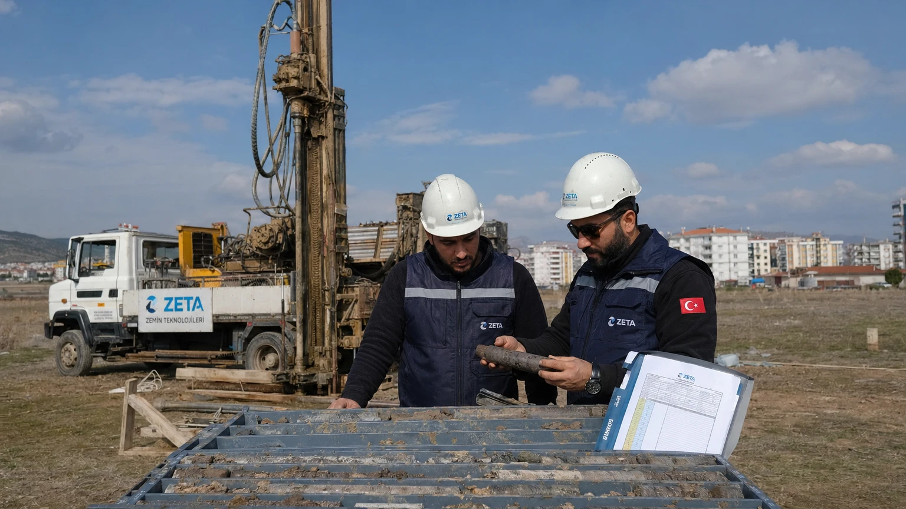

Zemin Etüdü Nedir? Deprem ve Yapı Güvenliğindeki Önemi
2023 Kahramanmaraş depremlerinde en fazla hasarın alüvyon zemin üzerindeki binalarda görülmesi tesadüf değil. Zeminin türü, bir binanın depremde nasıl davranacağını büyük ölçüde belirler. İşte zemin etüdü ve neden bu kadar önemli olduğu.
Zemin Etüdü Nedir?
Zemin etüdü (jeoteknik etüt), bir arazi parçasının fiziksel ve mekanik özelliklerini belirlemek için yapılan bilimsel incelemedir. Amaç: o zeminde inşa edilecek yapının güvenli olup olmadığını anlamak. Mühendisler sondaj (zemine delik açma), laboratuvar deneyleri ve arazi testleri ile zeminin taşıma kapasitesini, sıvılaşma riskini ve sismik amplifikasyon potansiyelini ölçer.
Zemin Türleri ve Deprem Riski
ZA - Sağlam Kaya: deprem dalgalarını olduğu gibi iletir, en güvenli. ZB - Çok Sıkı Kum/Çakıl: iyi yapı zemini. ZC - Sıkı Kil/Orta Kum: orta risk, dikkatli tasarım gerekir. ZD - Yumuşak Kil: dalgaları 3-5 kat güçlendirir, yüksek risk. ZE/ZF - Çok Yumuşak Alüvyon: sıvılaşma ve aşırı amplifikasyon riski. TBDY 2019, binaların zemin sınıfına göre ayrı hesap yapılmasını zorunlu kılar.
Zemin Sıvılaşması Nedir?
Zemin sıvılaşması, suya doygun kum zeminlerin deprem titreşimleriyle birden akışkan hale gelmesi olayıdır. 1999 İzmit depreminde Adapazarı'nda onlarca bina zemin sıvılaştığı için düz zemine battı. Belirtileri: binalarda ani çökme, zeminde kraterler ve su fışkırtmaları. Alüvyon ovalar, dere yatakları, deniz kenarı dolgu alanları risk altındadır.
Zemin Etüdü Zorunlu mu?
Evet. İmar Kanunu ve TBDY 2019 gereği her yapı için zemin etüdü zorunludur. İmar izni aşamasında zemin etüt raporu belediyeye sunulmadan proje onaylanmaz. Ancak mevcut binaların büyük kısmı bu yönetmelik öncesinde yapıldı — zemin etüdü yapılmamış ya da yetersiz yapılmış olabilir.
Raporunuzu Nasıl Okursunuz?
Elinizdeki zemin etüt raporunda şunlara bakın: Zemin Sınıfı (ZA-ZF): ne kadar riskli. Taşıma Kapasitesi (kPa): zemin ne kadar yük kaldırabilir. Sıvılaşma Potansiyeli: düşük/orta/yüksek olarak belirtilir. Yeraltı Suyu Derinliği: sığ su sıvılaşma riskini artırır. Önerilen Temel Tipi: radye/kazık/tekil temel. Bilginiz yoksa bir inşaat mühendisine raporu inceletin.
Zemin Sorunlu İse Ne Yapabilirsiniz?
Yaşadığınız bina ZD/ZE zemin üzerindeyse: 1. Bina statik güçlendirme değerlendirmesi yaptırın. 2. DASK sigortanızı yaptırın. 3. Kentsel dönüşüm kapsamına alınıp alınamayacağını araştırın. 4. Binanızın genel deprem dayanıklılığını test edin. ZD/ZE zemin, tek başına binanın güvensiz olduğu anlamına gelmez — tasarım ve yapım kalitesi de belirleyicidir.